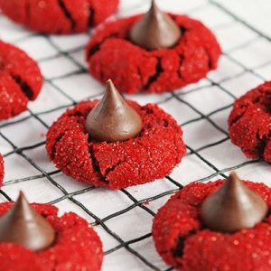

Red Velvet Peanut Butter Blossoms

Description
Red Velvet Peanut Butter Blossoms are the most
delicious cookies! If you love red velvet cake and
peanut butter, you will love this recipe. The red
sugars make them so sparkly and pretty, they would
be perfect for a cookie party, or a dessert table.
Ingredients
- 1 stick butter, room temperature
- 3/4 cup creamy peanut butter
- 1 1/3 cups granulated sugar
- 1 egg
- 2 tbsp. milk
- 2 tsp. vanilla
- 1 tsp. red gel food coloring
- 3 tbsp. unsweetened cocoa
- 1 1/2 cups all purpose flour
- 1 tsp. baking soda
- pinch salt
- 1/4 cup red sanding sugar
- 1 bag Hershey's Kisses unwrapped
Steps
- Heat oven to 375°F
- Beat butter, peanut butter, and sugar in a stand
mixer for about 2 minutes on medium speed. Turn
mixer to low and add in egg, milk, vanilla, and
red food coloring. Mix for about 30 seconds to
incorporate, then turn mixer to medium-high and
blend until light and fluffy
- In a separate bowl sift cocoa, flour, baking
soda and salt. With mixer on slow add flour
mixture to sugar mixture and beat until just
combined
- Remove mixer bowl from stand. Shape dough into 1
inch balls. Set on a parchment lined baking sheet
- Pour red sanding sugar onto small plate or bowl
- Roll dough ball in red sanding sugar and place on
prepared cookie sheet about 2 inches apart. (If want
them extra chewy, chill for 10 minutes in the freezer
before baking.)
- Bake for 8 to 10 minutes
- While baking unwrap Hershey's Kisses. Once
cookies are done baking, remove from oven and
immediately press a chocolate Kiss into the
center of each cookie. The cookie should crack
around edges
- Allow cookies to cool to room temperature